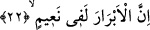
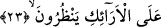

“O kitabı” Allah’a keramet yakınlığı ile “yakın olanlar” yâni melekler “görür.” Bir
başka ifâdeyle o kitabın yanında Allah’a yakın olan melekler dururlar ve onu zâyi olup
kaybolmaktan bu melekler korurlar.
Fethu’r-Rahman’da ifâde edildiğine göre bunlar semânın mukarreb meleklerinden
yedi adettirler. Her semada bir mukarreb melek vardır. Onlar bu kitaba erişir, Allah’ın
dilediği noktaya kadar ulaştırıp uğurlarlar ve bu olay her gün tekrar eder. Âyetin bir
başka anlamı ise şudur: Melekler kıyamet günü herkesin önünde, onun içinde ne
olduğuna şâhidlik ederler. Günahkarların durumu açıklanırken “o gün vay hâline
yalancıların!” ifâdesi kullanılırken, buna karşılık burada aynı üslubla; “o gün ne mutlu
tasdik edenlere” denmeyişinin sırrı bu ifâdeyle açığa çıkmaktadır. Çünkü bir ta’zim ve
ululama olsun diye meleklerin bulunmasından söz edilmesi bu anlamı fazlasıyla ifâde
etmektedir. Dolayısıyla yalan sayan ve doğrulayan her iki zümre, kendi durumuna uygun
olan ifâdeyle bitirilmektedir.
Kâşânî der ki: Saîd olan kimselerin amel ve nurâni nefislerinin hey’eti ile faziletli
melekelerinin durumu yazılmış olan şeyler İlliyyûn’dadır. Burası Siccîn’in tam zıddıdır.
İlliyyûn nasıl yukarda, Cennette yüksek dereceleri elde etme sebebi ve hayır ehlinin
amel divanı ise siccîn de bunun tam zıttı olarak o derece aşağıdadır, aşağıya inme
sebebidir ve şer ehlinin amel divanıdır. Âyette “illiyyûn” kelimesi, “kitabun merkumun”
şeklinde açıklanmaktadır. Bunun anlamı; o şerefli bir yerdir ve oraya mukarreblerin
amelleri semavi bir varlık veya insani bir unsur olarak sûret biçiminde yazılmıştır. İşte
bu mahalle Allah Teâlâ’nın tevhid-i zati ehlinden has kulları gelirler.
22. İyiler kesinkes Cennettedir.
“İyiler” yâni nefisleri sıfat kirinden paklanmış müttaki ve saîd kimseler “kesinkes
Cennettedirler.” Allah iyilerin nimet içinde olduklarını vurguladıktan sonra bunun nasıl
bir nimet olduğunu üç unsurla nitelemektedir. Bunlardan birincisi yirmiüçüncü âyet-i
kerimedir:
23. Onlar orada koltuklar üzerinde etrafa bakarlar.
“Koltuklar üzerinde bakarlar.” Âyette yer alan “erâik” kelimesi, tüllerle süslenmiş
gelin odalarındaki karyola demektir. Karyola kelimesi, taht anlamında ancak gelin
odasında olduğunda kullanılır. Bilindiği üzere gelin odası kumaşlarla, perdelerle ve
karyolalarla süslenir.